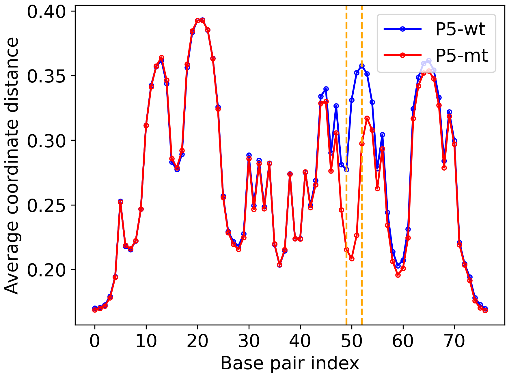
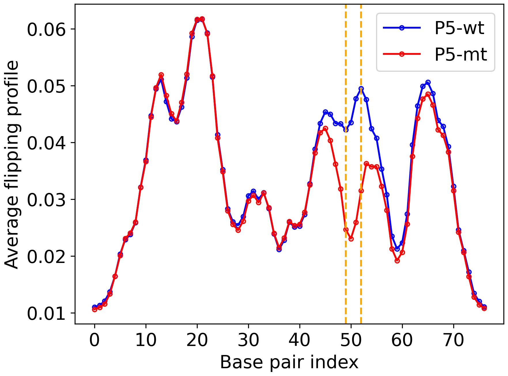

Welcome to pyDNA-EPBD’s documentation!#
This repository corresponds to the article titled as pyDNA-EPBD: A Python-based Implementation of the Extended Peyrard-Bishop-Dauxois Model for DNA Breathing Dynamics Simulation.
{kind=link}
Figure 1: Overview of the pyDNA-EPBD implementation.#
The dynamic behavior of DNA sequences, including local transient openings or breathing and flipping, is crucial in a wide range of biological processes and genomic disorders. However, accurate modeling and simulation of these phenomena, particularly for homogeneous and periodic DNA sequences, have remained a challenge due to the complex interplay of factors such as hydrogen bonding, electrostatic interactions, and base stacking. To address this, we have developed pyDNA-EPBD, a Python-based software tool that employs an extended version of the Peyrard–Bishop–Dauxois (EPBD) model. This extension integrates a sequence-dependent stacking term, enabling a more precise description of the DNA melting behavior for homogenous and periodic sequences. Through the use of a Monte Carlo Markov Chain (MCMC) approach, pyDNA-EPBD simulates DNA dynamics and generates data on DNA breathing characteristics such as bubble coordinates and flipping.
Resources#
Installation#
git clone https://github.com/lanl/pyDNA_EPBD.git
cd pyDNA_EPBD
conda create -c conda-forge --name pydnaepbd_pypy39_conda pypy python=3.9 -y
conda activate pydnaepbd_pypy39_conda
python setup.py install
# Run your first pyDNA-EPBD simulation.
# This will generate P5 wild and mutant sequence breathing dynamics in the "outputs" directory.
python -m pydna_epbd.run --config_filepath examples/p5/configs.txt
# The other libraries to analyze the DNA breathing dynamics can be installed using the following command:
conda install -c conda-forge scikit-learn scipy pandas matplotlib seaborn jupyterlab -y
# To deactivate and remove the venv
conda deactivate
conda remove --name pydnaepbd_pypy39_conda --all -y
Prerequisites#
- To run the simulation:
argparse>=1.4.0
joblib>=1.3.0
numpy>=1.25.1
- To analyze the DNA breathing dynamics (BD):
scikit-learn>=1.3.0
scipy>=1.11.1
pandas>=2.0.3
matplotlib>=3.7.2
seaborn>=0.12.2
Configuration file structure#
The simulation requires a configuration filepath. The structure of a configuration file is follows:
Keys |
Options |
Comments |
|---|---|---|
IsFirstColumnId |
Yes/No |
Whether or not the first column in the sequence file indicates sequence id. |
SaveFull |
Yes/No |
Whether or not save full simulation outputs. No is space efficient. |
SaveRuntime |
Yes/No |
Whether or not save runtime for each DNA sequence. |
SequencesDir |
examples/p5/p5_seqs/ |
Directory that contains sequence file(s). |
OutputsDir |
outputs/ |
Directory where pyDNA-EPBD saves outputs. |
Flanks |
None |
The flanks (‘GC’ like sequence) will be prepend and append with all input DNA sequences. ‘None’ will not add any. |
Temperature |
310 |
The simulation temperature in Kelvin scale. |
PreheatingSteps |
50000 |
The number of preheating steps. |
PostPreheatingSteps |
80000 |
The number of post-preheating steps. Usually, the monitors record observations during the post-preheating steps. |
ComputingNodes |
1 |
Number of computing nodes available to run the simulation. This parameter is only be used while running the simulation with SLURM script. |
BubbleMonitor |
On/Off |
Whether or not record DNA bubble information. |
CoordinateMonitor |
On/Off |
Whether or not record coordinate information. |
FlippingMonitorVerbose |
On/Off |
Whether or not record flipping information for five different thresholds. |
FlippingMonitor |
On/Off |
Whether or not record flipping information for one threshold. |
EnergyMonitor |
On/Off |
Whether or not record energy information. |
MeltingAndFractionMonitor |
On/Off |
Whether or not record melting and fraction information for one threshold. |
MeltingAndFractionManyMonitor |
On/Off |
Whether or not record melting and fraction information for 20 thresholds at evenly separated 100 time steps. |
Example Configurations and P5 DNA sequences#
The example simulation run uses the following configuration file (examples/p5/configs.txt):
IsFirstColumnId = Yes
SaveFull = No
SaveRuntime = No
SequencesDir = examples/p5/p5_seqs/
OutputsDir = outputs/
Flanks = None
Temperature = 310
Iterations = 100
PreheatingSteps = 50000
PostPreheatingSteps = 80000
ComputingNodes = 1
BubbleMonitor = On
CoordinateMonitor = On
FlippingMonitorVerbose = On
FlippingMonitor = Off
EnergyMonitor = Off
MeltingAndFractionMonitor = Off
MeltingAndFractionManyMonitor = Off
The input P5 DNA sequences (examples/p5/p5_seqs/p5_wt_mt.txt) are:
P5_wt GCGCGTGGCCATTTAGGGTATATATGGCCGAGTGAGCGAGCAGGATCTCCATTTTGACCGCGAAATTTGAACGGCGC
P5_mt GCGCGTGGCCATTTAGGGTATATATGGCCGAGTGAGCGAGCAGGATCTCCGCTTTGACCGCGAAATTTGAACGGCGC
Example Usage#
Here we provide the full documentation of the modules and packages. However, this section describes three easy-to-go options to run the MCMC simulation directly on DNA sequences.
Option 1 - Using python script: This uses single computing node.
python -m pydna_epbd.run --config_filepath examples/p5/configs.txt
Option 2 - Using multiple computing nodes (SLURM): To avail multiple nodes, we suggest to define –array variable in a SLURM script:
#SBATCH --array=0-5 # i.e If six nodes are avilable
Then, ComputingNodes variable in the confiuration file should be the total number of nodes to use. For the above case:
ComputingNodes = 6
Now all the input DNA sequences will be divided into Six chunks to run independently in six computational nodes. Example SLURM script is given here for P5.
Option 3 - Defining own python script: A user can define own python script and run the simulation. An example python script is given below:
import os
import math
from pydna_epbd.input_reader import read_configurations
from pydna_epbd.simulation.simulation_steps import run_sequences
if __name__ == "__main__":
"""This runs the simulation."""
job_idx = 0
# array job
if "SLURM_ARRAY_TASK_ID" in os.environ:
job_idx = int(os.environ["SLURM_ARRAY_TASK_ID"])
input_configs = read_configurations("examples/p5/configs.txt")
# dividing the input sequences to the nodes based on job-idx
chunk_size = math.ceil(len(input_configs.sequences) / input_configs.n_nodes)
sequence_chunks = [
input_configs.sequences[x : x + chunk_size]
for x in range(0, len(input_configs.sequences), chunk_size)
]
sequences = sequence_chunks[job_idx]
print(f"job_idx:{job_idx}, n_seqs:{len(sequences)}")
run_sequences(sequences, input_configs)
The above options will generate outputs in the outputs directory. The average coordinate and flipping profiles are plotted below.
Figure 2: Average coordinates. |
Figure 3: Average flipping. |
|---|---|
 |
 |
To run simulation on other dataset#
unzip data/pydna_epbd_data.zip -d data
python pydna_epbd.run --config_filepath examples/86_seqs/configs.txt
python pydna_epbd.run --config_filepath examples/gcpbm/configs.txt
python pydna_epbd.run --config_filepath examples/p5/configs.txt
python pydna_epbd.run --config_filepath examples/qfactor/configs.txt
python pydna_epbd.run --config_filepath examples/selex/configs.txt
Results#
Here we also provide the other results for quick reference.

Figure 4: Overview of Bubble Tensor for P5 wild type and mutant type for different thresholds.#
{kind=link}
{kind=link}
Figure 5: P5 Q-factor analysis.

Figure 6: Utility of breating characeristics on TF binding specificity for selex data.#
{kind=link}
Figure 7: Scalability analysis.#
Acknowledgments#
Los Alamos National Lab (LANL), T-1
Copyright Notice#
© (or copyright) 2023. Triad National Security, LLC. All rights reserved. This program was produced under U.S. Government contract 89233218CNA000001 for Los Alamos National Laboratory (LANL), which is operated by Triad National Security, LLC for the U.S. Department of Energy/National Nuclear Security Administration. All rights in the program are reserved by Triad National Security, LLC, and the U.S. Department of Energy/National Nuclear Security Administration. The Government is granted for itself and others acting on its behalf a nonexclusive, paid-up, irrevocable worldwide license in this material to reproduce, prepare derivative works, distribute copies to the public, perform publicly and display publicly, and to permit others to do so.
License#
This program is open source under the BSD-3 License. Redistribution and use in source and binary forms, with or without modification, are permitted provided that the following conditions are met:
1. Redistributions of source code must retain the above copyright notice, this list of conditions and the following disclaimer.
2. Redistributions in binary form must reproduce the above copyright notice, this list of conditions and the following disclaimer in the documentation and/or other materials provided with the distribution.
3. Neither the name of the copyright holder nor the names of its contributors may be used to endorse or promote products derived from this software without specific prior written permission.
THIS SOFTWARE IS PROVIDED BY THE COPYRIGHT HOLDERS AND CONTRIBUTORS “AS IS” AND ANY EXPRESS OR IMPLIED WARRANTIES, INCLUDING, BUT NOT LIMITED TO, THE IMPLIED WARRANTIES OF MERCHANTABILITY AND FITNESS FOR A PARTICULAR PURPOSE ARE DISCLAIMED. IN NO EVENT SHALL THE COPYRIGHT HOLDER OR CONTRIBUTORS BE LIABLE FOR ANY DIRECT, INDIRECT, INCIDENTAL, SPECIAL, EXEMPLARY, OR CONSEQUENTIAL DAMAGES (INCLUDING, BUT NOT LIMITED TO, PROCUREMENT OF SUBSTITUTE GOODS OR SERVICES; LOSS OF USE, DATA, OR PROFITS; OR BUSINESS INTERRUPTION) HOWEVER CAUSED AND ON ANY THEORY OF LIABILITY, WHETHER IN CONTRACT, STRICT LIABILITY, OR TORT (INCLUDING NEGLIGENCE OR OTHERWISE) ARISING IN ANY WAY OUT OF THE USE OF THIS SOFTWARE, EVEN IF ADVISED OF THE POSSIBILITY OF SUCH DAMAGE.
Documentation#
Indices and tables#
How to Cite pyDNA-EPBD?#
@software{pyDNA_EPBD,
author = {Kabir, Anowarul and
Bhattarai, Manish and
Rasmussen, Kim and
Shehu, Amarda and
Usheva, Anny and
Bishop, Alan and
Alexandrov, Boian},
title = {pyDNA-EPBD: A Python-based Implementation of the Extended Peyrard-Bishop-Dauxois Model for DNA Breathing Dynamics Simulation},
month = Aug,
year = 2023,
publisher = {Zenodo},
version = {v1.0.0},
doi = {10.5281/zenodo.8222805},
url = {https://doi.org/10.5281/zenodo.8222805}
}